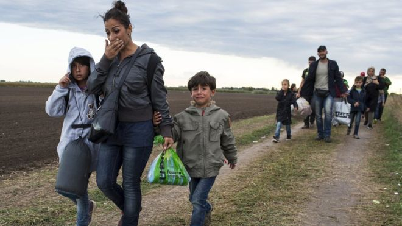

the
Migrant
Crisis
By the numbers

Select one
Pakistan
Syria
Kuwait
Saudia Arabia
is the top origin country for refugees
Most Syrian refugees remain in the Middle East, in Turkey, Lebanon, Jordan, Iraq, and Egypt; slightly more than 10 percent of the refugees have traveled to Europe.
Try again!
Approximately
Select one
10
1,500
10,000
100
people each day are attempting to traverse an overland route from Greece, through Macedonia, Serbia and into Hungary.
Europe is in the grip of an emergency as tens of thousands of migrants and refugees from Syria, the Middle East and Africa attempt to cross into its territory.
Try again!
Select one
Germany
France
Macedonia
United States
is the top origin country for refugees
Most Syrian refugees remain in the Middle East, in Turkey, Lebanon, Jordan, Iraq, and Egypt; slightly more than 10 percent of the refugees have traveled to Europe.
Try again!
Approximately
Select one
75,000
500,000
200,000
10,000
migrants and refugees have reached Europe via the Mediterranean in 2015.
Despite rain and cold, thousands more refugees attempt sea crossings to reach Europe. More than 3,200 have perished this year.
Try again!